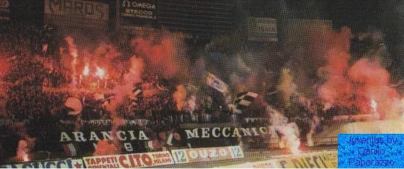
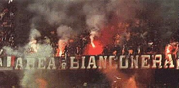
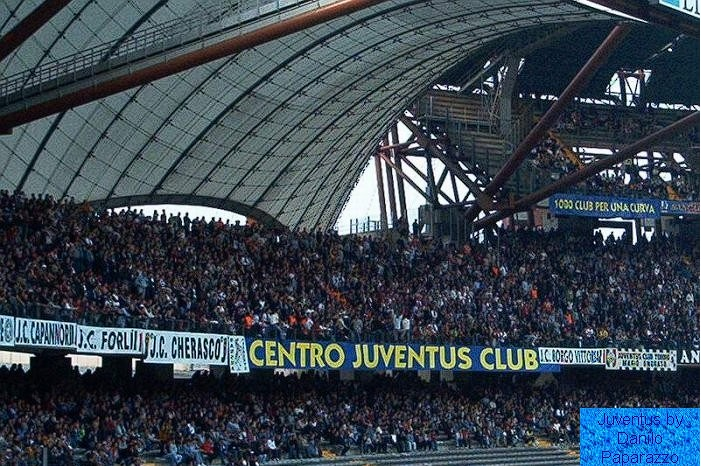

Juventus Fan Page
The history of the Juventus fans
- The first real groups of Juventus supporters came in the middle of the 1970's. The first two groups were
on
the extreme left side in politics and were badly organized. The first two groups were called Venceremos
and
Autonomia Bianconera. In 1976 the first two real ultras groups were founded, Fossa Dei Campioni and
Panthers. One year later the historic group Fighters was founded by Beppe Rossi. He was the most
important
figure among the Juventus supporters and had extreme influence on young ultras in Turin.

- The first real groups of Juventus supporters came in the middle of the 1970's. The first two groups were
on the extreme left side in politics and were badly organized. The first two groups were called
Venceremos and Autonomia Bianconera. In 1976 the first two real ultras groups were founded, Fossa Dei
Campioni and Panthers. One year later the historic group Fighters was founded by Beppe Rossi. He was the
most important figure among the Juventus supporters and had extreme influence on young ultras in
Turin.

- In 1987 the historic group Fighters was dissolved after 10 years of glory. The reason was the fighting
and violence that occured in the away match against historic rivals Fiorentina. The majority of the old
Fighters members, along with members from other groups (Indians and Gioventu Bianconera) decided to
create a new group called Arancia Meccanica(Clockwork Orange). The name was inspired by the popular
Stanley Kubrick film.

Contact Us